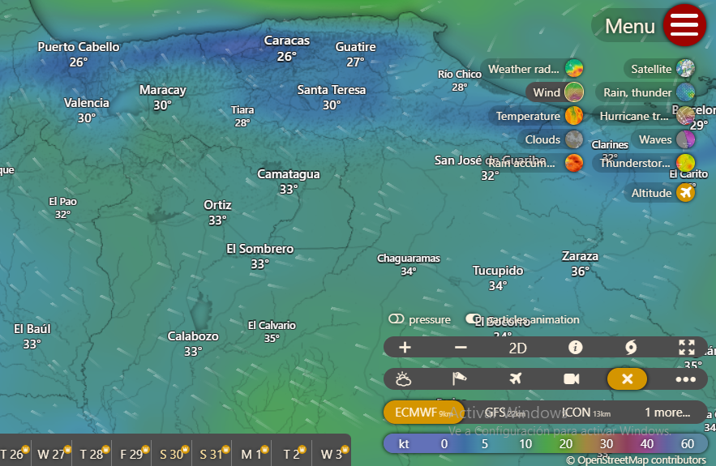
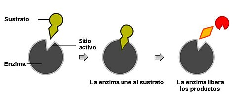
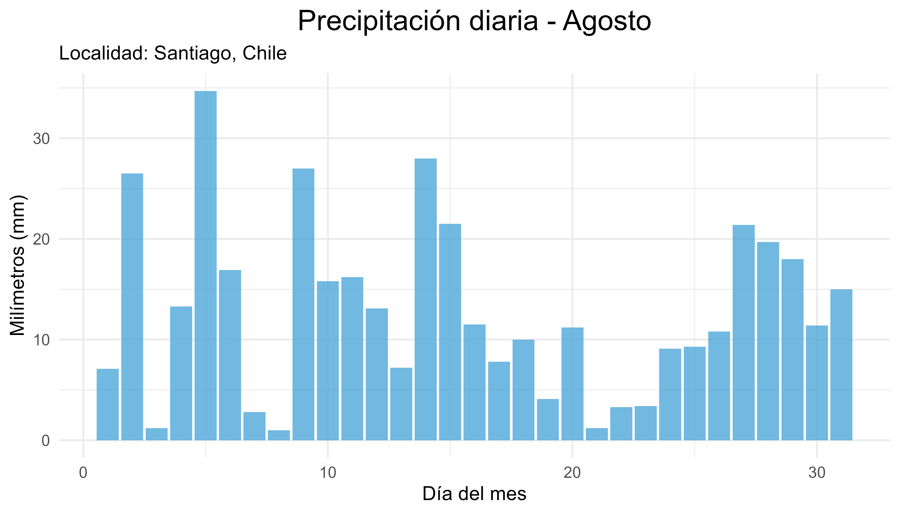
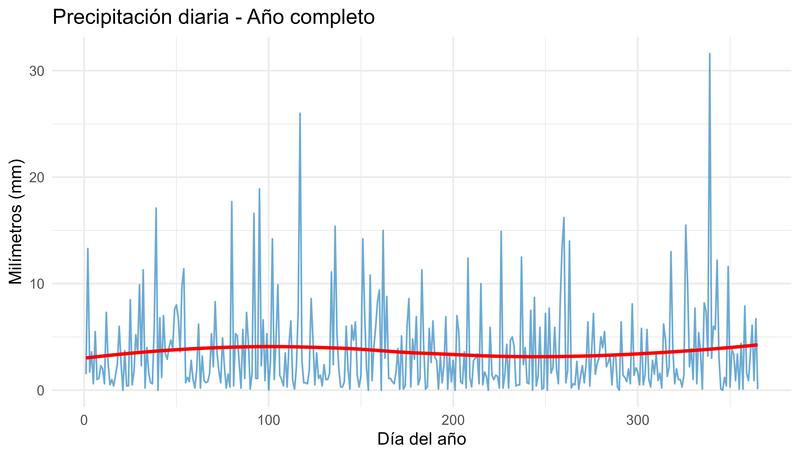
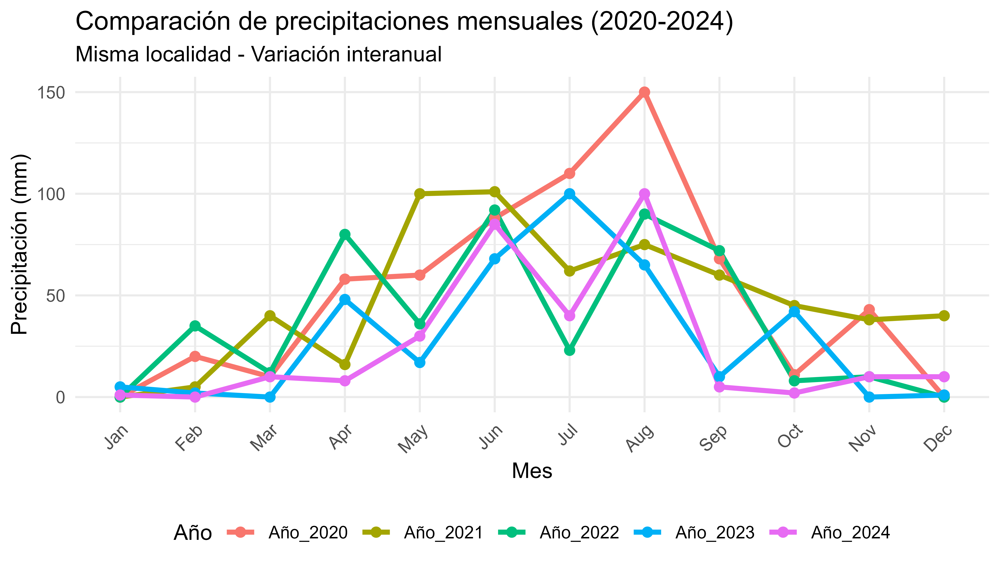
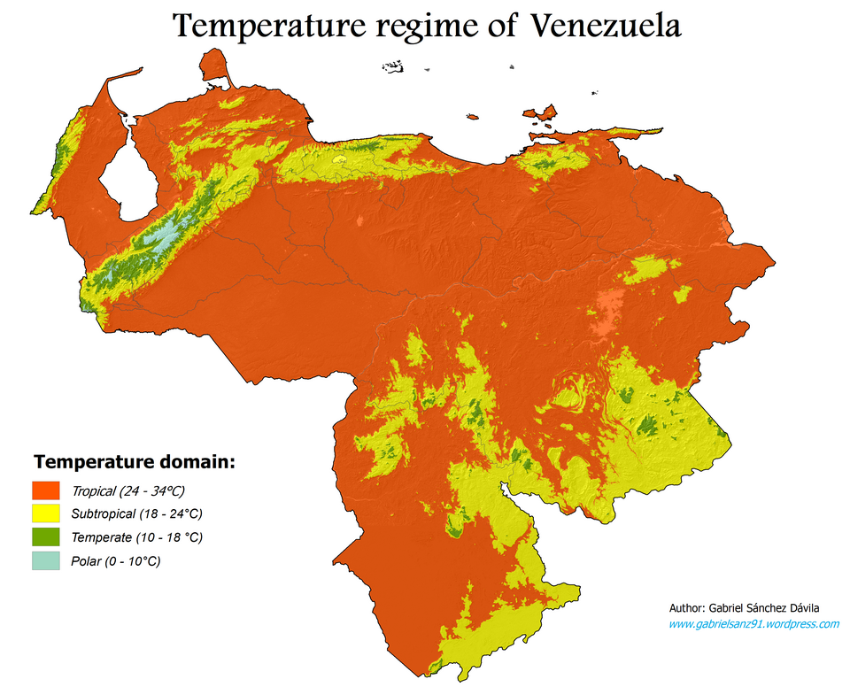

Clase 01: Introducción a la Climatología Agroambiental
Contenido
-El clima como parte del ambiente físico y su importancia
-Características del clima como recurso
-Usos agroambientales de la información climática: planificación estratégica, táctica y operativa
-Pasos para la aplicación de información climática; medición y procesamiento
-Integración con la información sobre la aplicación
Personal docente
Prof. Miguel Silva
Prof. Naghely Mendoza
Estructura de la asignatura
-Tema 1. Introducción y conceptos básicos
-Tema 2. Radiación y Balance energético
-Tema 3. Temperatura
-Tema 4. Evaporación y Evapotranspiración
-Tema 5. Precipitación y régimen hídrico
-Tema 6. Aplicaciones de la climatología
Los sistemas de producción agrícola y los ecosistemas naturales
No dependen de un solo factor, sino de la interacción entre varios componentes del ambiente y de la acción humana.
- 🌱 Suelo - 🖐️ Prácticas de manejo
- 🌍 Ambiente físico - 🌳 Ecosistemas naturales
- 🦠 Agentes bióticos - 💰 Aspectos socioeconómicos
- ⚙️ Tecnología - 🧬 Potencial genético de la variedad o raza
La climatología agroambiental no estudia solo el clima como dato meteorológico, sino cómo ese clima se relaciona con el funcionamiento real de los sistemas productivos y naturales.
Tiempo meteorológico
Condición de la atmósfera en un momento particular definida por el comportamiento de los elementos climáticos en ese momento

Clima
Descripción estadística del tiempo meteorológico en términos de sus valores medios y de la variabilidad de sus magnitudes durante períodos que pueden abarcar desde meses hasta millares o millones de años (IPCC, 2007)

Factores del clima
Son características de la superficie terrestre o condiciones de la atmósfera que modifican a los elementos climáticos
Latitud
Altitud
Cercanía a masas de agua
Topografía
Distribución de las masas de tierra y agua
Corrientes oceánicas
Centros de altas y bajas presiones
Masas de aire
La agrometeorología
Estudia la acción mutua de las variables atmosféricas y la agricultura en su sentido más amplio.
Comprende desde la capa de suelo donde crecen las raíces mas profundas de árboles y plantas, pasando por la capa de aire próxima al suelo, en la que viven cultivos, árboles y animales, hasta alcanzar los más elevados niveles de la atmosfera en donde ocurren procesos como transporte y dispersión de polvo, semillas y polen.
Necesidad de formación básica en agrometeorología
Conocimiento básico de los elementos climáticos y su efecto en el ambiente y la agricultura (cultivos y labores)
Conocimiento de las características generales del clima del país: de los patrones de sus elementos climáticos, de su variabilidad temporal y espacial
Manejo de métodos estadísticos para la evaluación del clima y uso de herramientas para el análisis de las consecuencias agrícolas y ambientales de las condiciones climáticas.
El Clima como recurso
Provee condiciones de radiación, temperatura y agua para la vida.
Determina los ciclos bioquímicos.
Determina la fotosíntesis y la respiración
Provee insumos para la actividad humana: agricultura, industria, doméstica, transporte, turismo, recreación.
Fuente de energía.
La atmósfera absorbe productos de desecho de las actividades económicas y sociales.
El clima como una fuente de riesgo
Variaciones en los elementos climáticos a lo largo del año
Variaciones en los elementos entre años
Variaciones en fechas de inicio y término de los períodos húmedos
Eventos extremos:Lluvias, Sequias, Vientos, Olas de calor o de frío
Cambio climático
Particularidades del clima como recurso
Estamos familiarizados con la idea de recursos para la producción que se manejan a través de la aplicación de insumos, o del mejoramiento genético, no obstante..
Se trata de un recurso generalmente no “controlable” en el sentido tradicional.
Manejar el recurso clima, implica tomar decisiones estratégicas, tácticas y operativas para armonizar la oferta y las limitaciones climáticas con los requerimientos climáticos.
Particularidades del clima como recurso
Debemos garantizar que confluya el mecanismo análogo al enzima-sustrato:
Enzima = Oferta = Clima
Sustrato = Demanda = Requerimientos de cultivos, plagas y labores

A traves de la armonización entre la oferta y la demanda climática se busca:
Maximizar rendimientos
Mejorar el uso de recursos
Reducir Riesgos
Reducir costos
Reducir daños ambientales
Particularidades del clima como recurso para la producción agrícola
En muchas áreas de la agronomía se acostumbra resumir los datos utilizando el promedio 🛑 ❌
Debido a su gran variabilidad espacial y temporal.
Los profesionales tienen que ser formados para que analicen el clima en términos de probabilidad y para que comprendan que dicha variabilidad es una fuente muy importante de riesgo agrícola. ✅
LAS CONDICIONES ATMOSFÉRICAS VARÍAN EN DIVERSAS ESCALAS TEMPORALES
Variación a corto plazo

Variación a largo del ano

Variacion interanual

Variacion espacial

Variabilidad climática:
Variaciones del estado medio y otras características estadísticas (desviación típica, sucesos extremos, etc.) del clima en todas las escalas espaciales y temporales más amplias que las de los fenómenos meteorológicos (IPCC, 2023)
📊 Datos climáticos
Radiación, Fotoperíodo,
Insolación, Temperatura,
Precipitación, Evaporación, Viento
🌱 Datos agronómicos y ambientales
Cultivo, Suelo, Labores, Pendiente,
Relieve, Plagas, Enfermedades
⬇️
⬇️
ℹ️ Información con fines agrícolas y ambientales
⬇️
🎯 TOMA DE DECISIONES
Pasos para la aplicación de la información climática
📋 Datos brutos
Datos estimados, Datos generados, Medición
⬇️
🌡️ Bases de datos climáticos
🗄️ Bases de datos agroambientales
⬇️
⬇️
⚙️ PROCESAMIENTO
Control de calidad
⬇️
🎯 INFORMACIÓN CON FINES AGRÍCOLAS Y/O AMBIENTALES
Usos de la Información con fines agrícolas y/o ambientales
Planificación estratégica (tiene consecuencias en el largo plazo)
Planificación Táctica (consecuencias involucran una estación o un ciclo de cultivo)
Planificación operativa (tiene consecuencias en el corto plazo)
Interpretación de resultados experimentales
Usos de la Información con fines agrícolas y/o ambientales
| Tipo de uso | Datos climáticos requeridos | Productos | Actividades que apoya |
|---|---|---|---|
|
Planificación Estratégica Consecuencias a largo plazo |
Registros largos (> 20 años) | Valores probables, promedio, fluctuaciones, valores extremos, períodos de retorno | Selección de especies • Zonificación de cultivos • Uso y manejo de la tierra • Selección de sistemas de labranza • Diseño de infraestructura • Calendarios agrícolas |
|
Planificación Táctica y Operativa Consecuencias a corto plazo |
Situación actual + pronóstico + registro histórico + pronóstico climático | Pronóstico y recomendación para próximas horas | Decisión de siembra y cosecha • Control de temperatura y humedad • Operación de riego |
|
Investigación Generación de nuevos conocimientos |
Medidos en el lugar de ensayo + registros | Descripción de condiciones del ensayo y comparación | Comprensión de procesos y relaciones |
Asi entonces..
La información climática es una entrada importante para el diseño, desarrollo y sostenibilidad de un amplio rango de actividades en diversos sectores socio económicos:
- Agricultura
- Planificación urbana
- Manejo de recursos energéticos y agua
- Transporte
- Turismo
- Operación de infraestructura
Sesión práctica
Fuentes de datos climáticos, descarga y procesamientos básicos